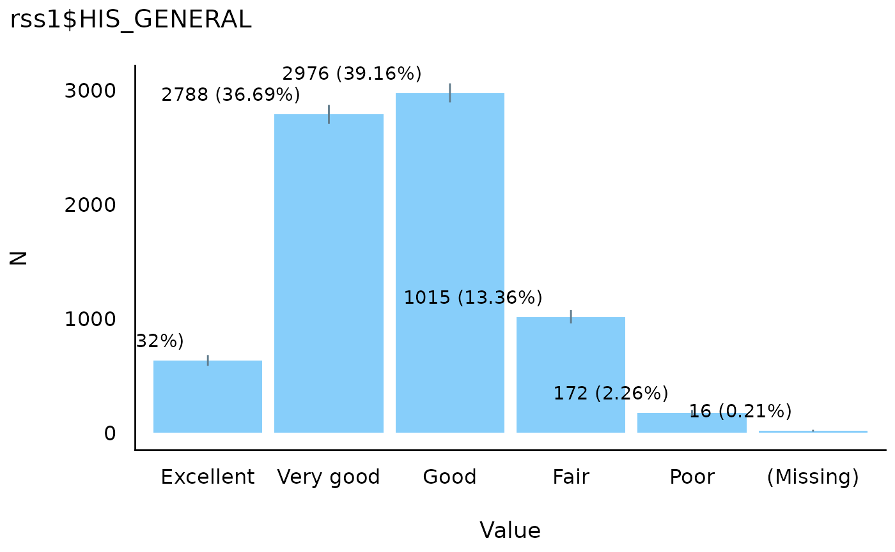
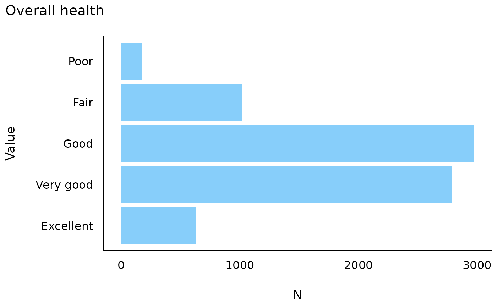
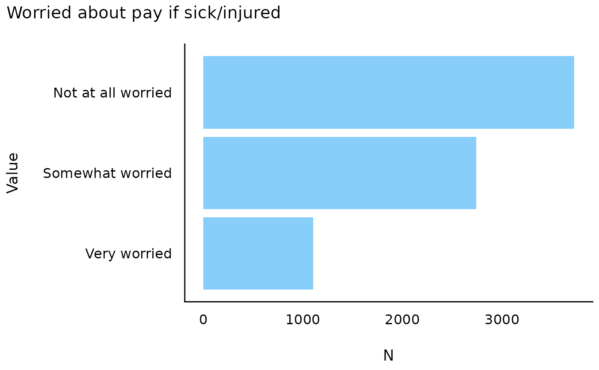
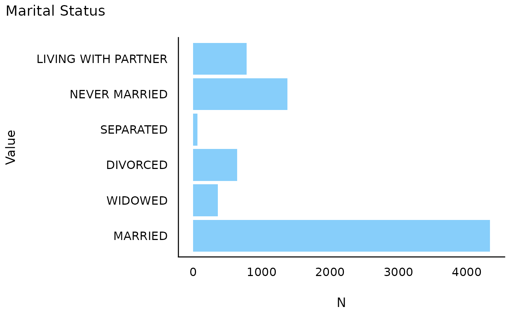

library(icorp26)
library(easystats)
#> # Attaching packages: easystats 0.7.6
#> ✔ bayestestR 0.18.1 ✔ correlation 0.8.8
#> ✔ datawizard 1.3.1 ✔ effectsize 1.0.2
#> ✔ insight 1.5.1 ✔ modelbased 0.15.0
#> ✔ performance 0.17.0 ✔ parameters 0.29.1
#> ✔ report 0.6.4 ✔ see 0.14.0We can also make some simple bar charts to display these. (There are many types of plots but these are to get started.)
data_tabulate(rss1$HIS_GENERAL) |> plot() 
That’s a mess!
Fortunately, we can use some options from the ggplot2
package and some extra options.
data_tabulate(rss1$HIS_GENERAL) |>
plot(label_values = FALSE, error_bar = FALSE,
show_na = "never") +
coord_flip() +
labs(title = "Overall health")
data_tabulate(rss1$PAY_PAYWORRY) |>
plot(label_values = FALSE, error_bar = FALSE,
show_na = "never") +
coord_flip() +
labs(title = "Worried about pay if sick/injured") 
data_tabulate(rss1$MARSTAT) |>
plot(label_values = FALSE, error_bar = FALSE,
show_na = "never") +
coord_flip() +
labs(title = "Marital Status")
They definitely are more complex, but you also have a huge amount of flexibility. You can change colors,shapes, sizes and more.